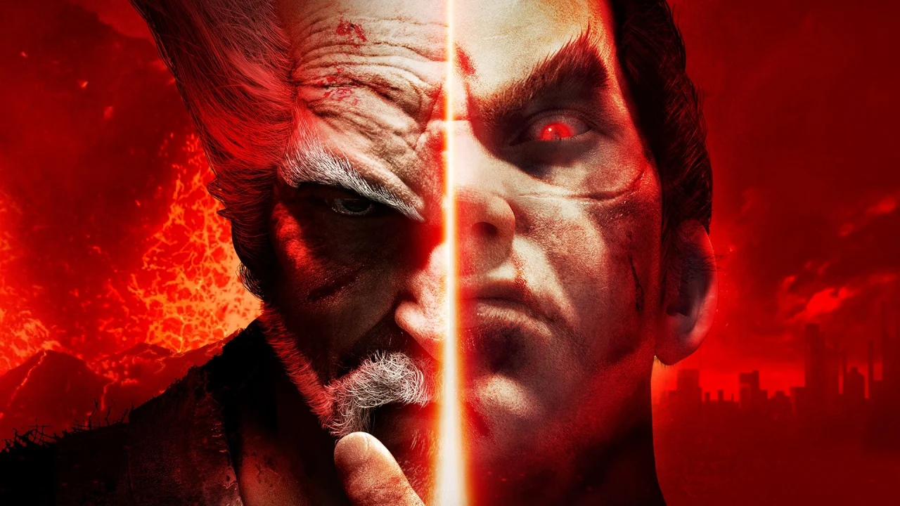

Tekken 7 Originals Edition and Definitive Edition announced
Definitive Edition actually gives players access to all seasons of content
Tekken 7 Originals Edition and Tekken 7 Definitive Edition have been announced by Bandai Namco. This heavily implies that the development for Tekken 7 DLC content has fully wrapped up.
